定点运算 链接到标题
移位运算 链接到标题
移位的意义 链接到标题
在日常计算中将 15.0 小数点右移 2 位为 1500.0，计算机中小数点位置固定不变。所以需要将数据相对小数点进行移位。
在计算机中，移位与加减配合，能够实现乘除运算。
- 左移，绝对值扩大
- 右移，绝对值缩小
算术移位规则 链接到标题
-
正数：原码、补码、反码添补代码都为 0
-
负数：
- 原码，添补代码为 0
- 补码，左移添 0，右移添 1
- 反码，添补代码为 1
符号位不变
算术移位举例 链接到标题
- 设机器数字长为 8 位(含 1 位符号位)，写出 A=+26 时，三种机器数左、右移移位和两位后的表示形式及对应的真值，并分析结果的正确性。 解： A=+26=+11010，则 A 的原码、补码、反码=0，0011010.
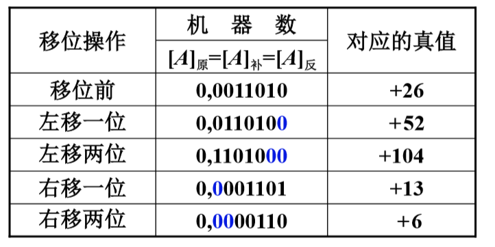
- 设机器数字长为 8 位(含 1 位符号位)，写出 A=-26 时，三种机器数左右移一位和两位后的表示形式及对应的真值，并分析结果的正确性。
解： A=-26=-11010
原码表示：
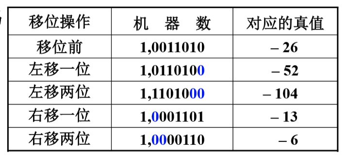
补码表示：
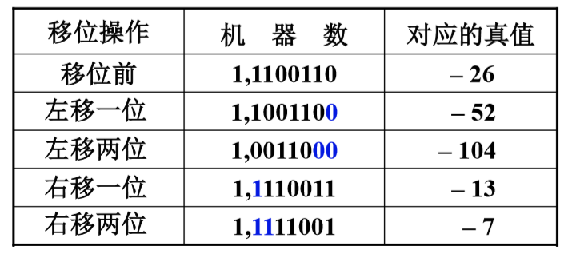
反码表示：
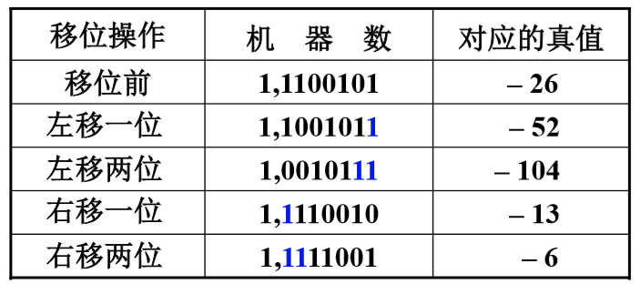
算数移位的硬件实现 链接到标题
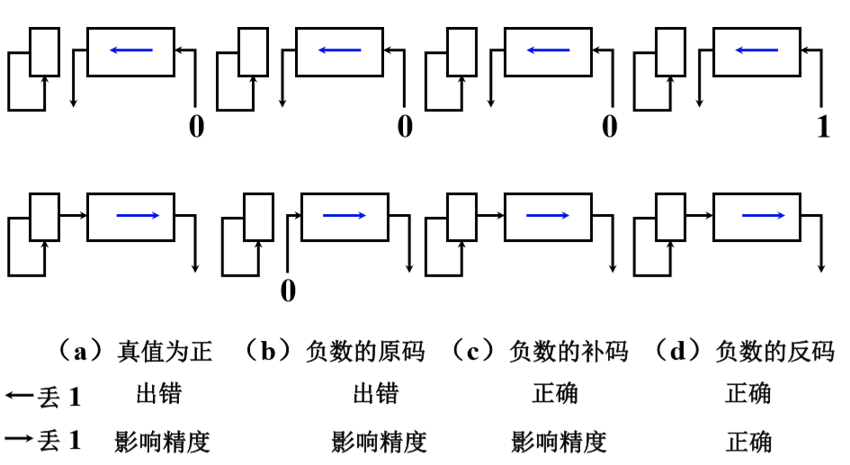
算术移位和逻辑移位的区别 链接到标题
- 算术移位 有符号数的移位
- 逻辑移位 无符号数的移位
- 逻辑左移 低位添 0，高位移丢
- 逻辑右移 高位添 0，低位移丢
例： 01010011
逻辑左移： 10100110
算术左移： 00100110
例： 10110010
逻辑右移： 01011001
算术右移： 11011001 (补码)
算术移位不会更改符号位，逻辑移位包括符号位全部移位。
加减法运算 链接到标题
补码加减法运算公式 链接到标题
- 加法
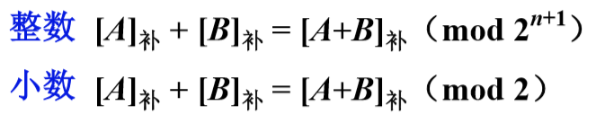
- 减法
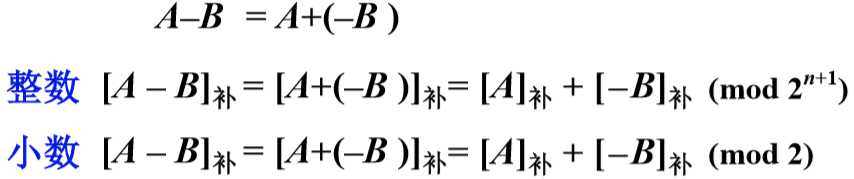
连同符号位一起相加，符号位产生的进位自然丢掉。
例题 链接到标题
- 设 A=0.1011，B=-0.0101，求[A + B]补
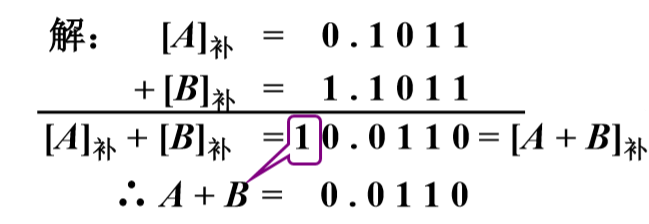
- 设 A=-9，B=-5，求[A + B]补
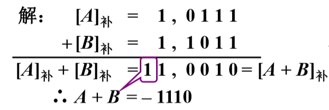
- 设机器数字长为 8 位(含 1 位符号位)，且 A=15，B=24，用补码求 A-B
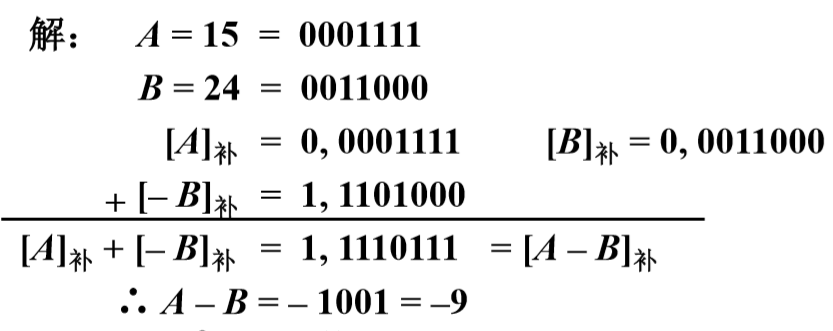
- 设 x=9/16，y=11/16，用补码求 x+y。 x+y=-0.1100=-12/16 （错）
- 设机器数字长为 8 位(含一位符号位)且 A=-97，B=+41，用补码求 A-B A-B=+1110110=+118 （错）
溢出判断 链接到标题
一位符号位判断溢出 链接到标题
参加操作的两个数(减法时即为被减数和”求补”以后的减数)符号相同，其结果的符号与原操作数的符号不同，即为溢出。
硬件实现：
最高有效位的进位 ⊕ 符号位的进位=1，即为溢出
有溢出：
- 1⊕0=1，0⊕1=1
无溢出：
- 0⊕0=0，1⊕1=0
两位符号位判断溢出 链接到标题
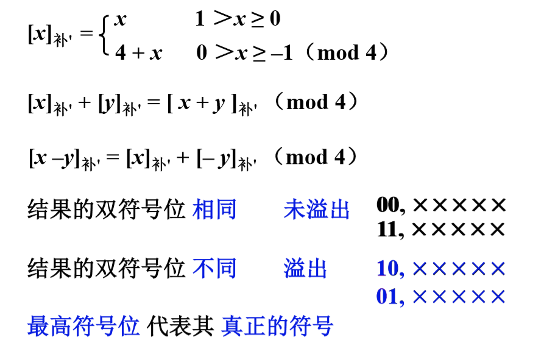
小数的补码可以以 2^k 为模，k 代表符号位的位数。
补码加减法的硬件配置 链接到标题
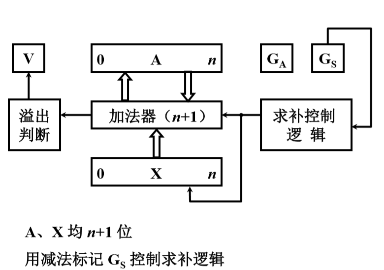
A 代表 ACC，Ga 与 Gs 是两个标记，如果是加法 Ga 置 1，如果是减法 Gs 置 1，求补控制逻辑判断 X 中如果是减法运算，则对 X 求补。
乘法运算 链接到标题
分析笔算乘法 链接到标题
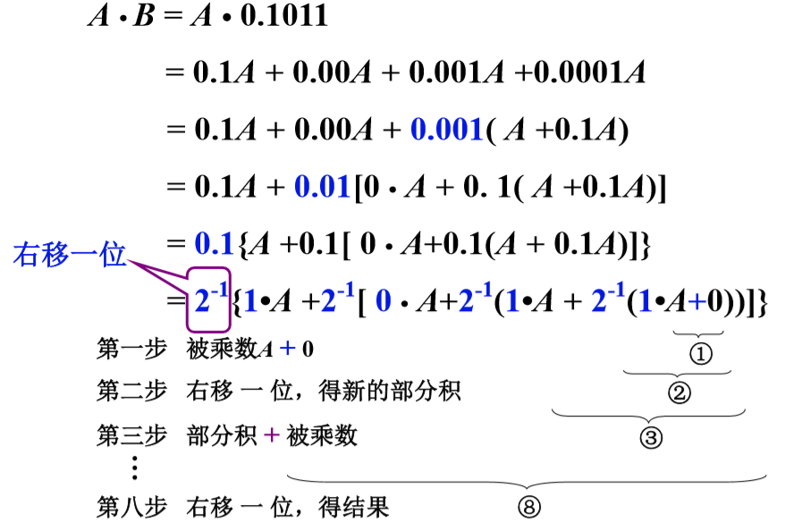
笔算乘法改进 链接到标题
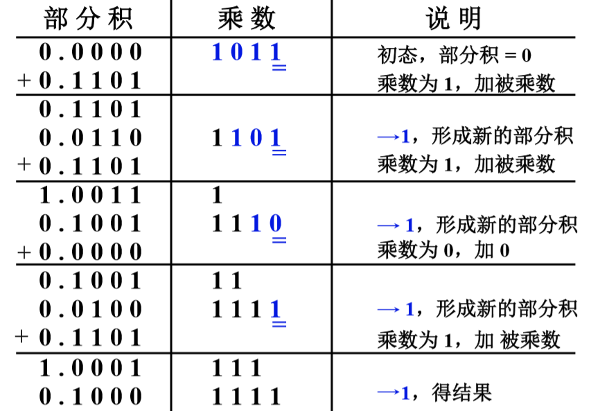
初态部分积为 0，然后需要分析乘数的数值部分 1011，最后一位为 1，则加 0.1101，相加后将部分积与乘数右移一位，部分积结果是 0.1101，分析乘数数值部分的末位，还是 1，再将整体右移一位，部分积为 0.0110，乘数为 1101，然后相加 0.1101，之后得到的结果 1.0011，将乘数右移一位，分析数值的末位是 0，则相加 0.0000，然后得到的结果分析数值末位是 1，将得到的结果右移一位，再相加 0.1101，结果为 1.0001，最后重复上述操作，结果为部分积与乘数之和，0.10001111.
小结 链接到标题
- 乘法运算可用加和移位实现，n=4，加 4 次，移 4 次
- 由乘数的末位决定被乘数是否与原部分积相加，然后->1 位形成新的部分积，同时乘数->1 位(末位移丢)，空出高位存放部分积的低位。
- 被乘数只与部分积的高位相加
- 硬件，3 个寄存器，其中 2 个具有移位功能，1 个全加器。
原码乘法 链接到标题
原码一位乘运算规则 链接到标题
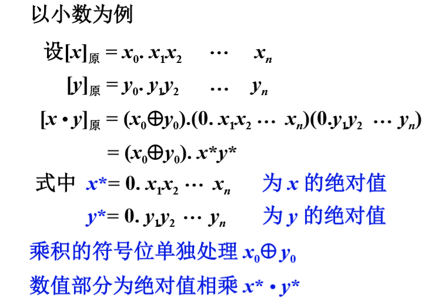
原码一位乘递推公式 链接到标题
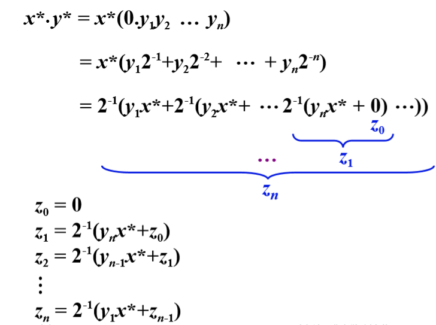
例题 链接到标题
已知 x=-0.1110，y=0.1101，求[x.y]原。
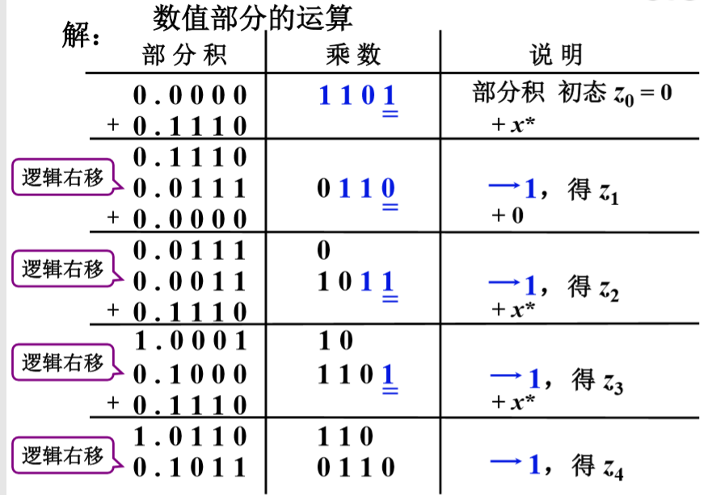
- 乘积的符号为：x0⊕y0=1⊕0=1
- 数值部分按绝对值相乘,x*.y*=0.10110110,则[x.y]原=1.10110110.
- 特点：绝对值运算，用移位的次数判断乘法是否结束，逻辑移位
原码一位乘的硬件配置 链接到标题
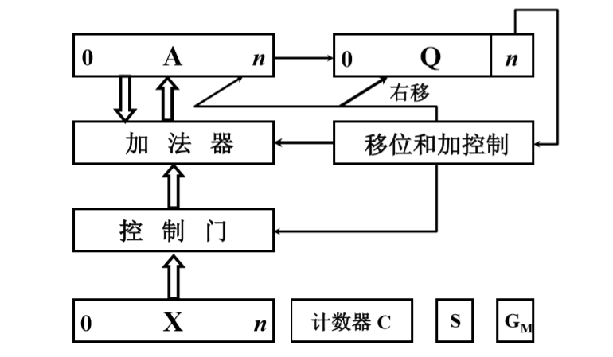
A、X、Q 均 n+1 位，移位和加受末位乘数控制，计数器用于计算移位的次数，s 代表符号位。
补码乘法 链接到标题
补码一位乘运算规则 链接到标题
以小数为例，设被乘数[x]补=x0x1x2⋯xn[x]补=x0x1x2⋯xn,乘数[y]补=y0y1y2⋯yn[y]补=y0y1y2⋯yn
- 被乘数任意，乘数为正 与原码乘相似，但加和移位按补码规则运算，乘积的符号自然形成
- 被乘数任意，乘数为负 乘数[y]补[y]补,去掉符号位，操作同 1，最后加[−x]补[−x]补，校正。
- Booth 算法(被乘数、乘数符号任意)
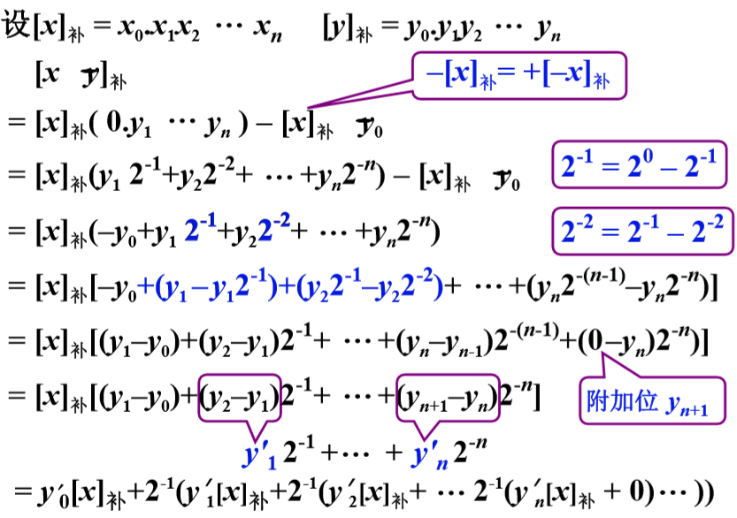
- Booth 算法递推公式
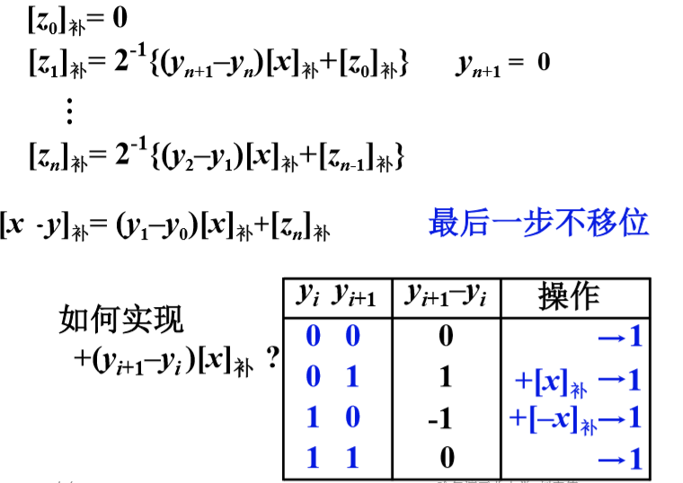
例题 链接到标题
已知 x=+0.0011，y=-0.1011，求[xy]补。
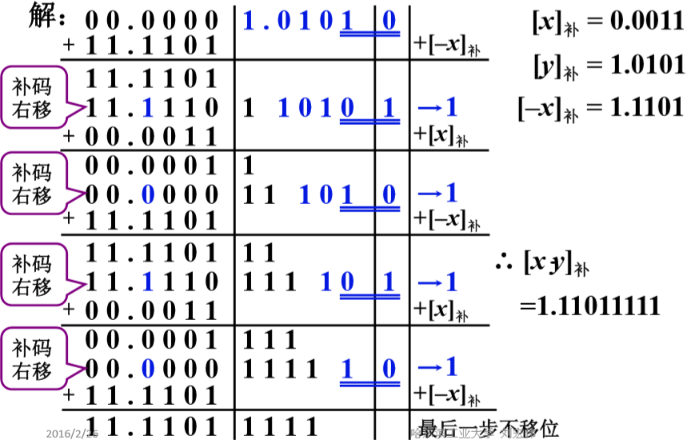
Booth 算法硬件配置
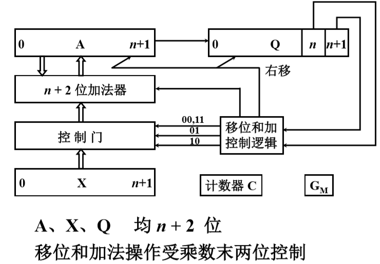
乘法小结 链接到标题
- 整数乘法与小数乘法过程完全相同，可用逗号代替小数点
- 原码乘 符号位单独处理，补码乘 符号位自然形成
- 原码乘去掉符号位运算，即无符号数乘法
- 不同的乘法运算需有不同的硬件支持
除法运算 链接到标题
分析笔算除法 链接到标题
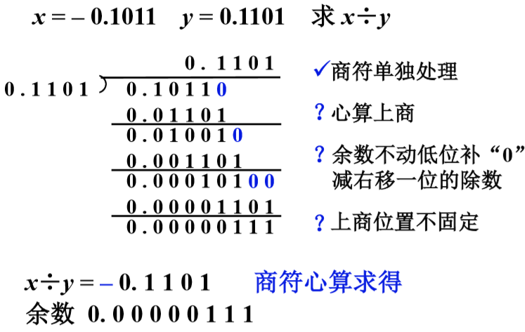
比较被除数与除数的大小，除数比被除数大，商 0，然后除数移位变成 0.01101，被除数补零，此时除数小于被除数，商 1，余数继续右移一位，再比较余数与除数的大小关系，如果除数比余数大，商 0，否则商 1。
笔算除法和机器除法比较 链接到标题
-
笔算除法
- 商符单独处理，心算上商
- 余数不动低位补”0”,减右移一位的除数
- 2 倍字长加法器，上商位置不固定
-
机器除法
- 符号位异或形成
- x*-y*>0 上商 1，x*-y*<0 上商 0
- 余数左移一位低位补”0”，减除数
- 一倍字长加法器，在寄存器最末位上商
原码除法 链接到标题
以小数为例
$$ [x]_{\text{原}} = x_0 x_1 x_2 \cdots x_n $$
$$ [y]_{\text{原}} = y_0 y_1 y_2 \cdots y_n $$
$$ [x/y]_{\text{原}} = (x_0 \oplus y_0) x^* / y^* $$
式中$x^*=0.x_1 x_2 \cdots x_n$为 x 的绝对值, $y^*=0.y_1 y_2 \cdots y_n$为 y 的绝对值
商的符号位单独处理$x_0⊕y_0$,数值部分为绝对值相除$x^*/y^*$
约定： 小数定点除法 x* < y*,整数定点除法 x* > y*,被除数不等于 0，除数不能为 0
恢复余数法 链接到标题
x=-0.1011,y=-0.1101,求[x/y]原
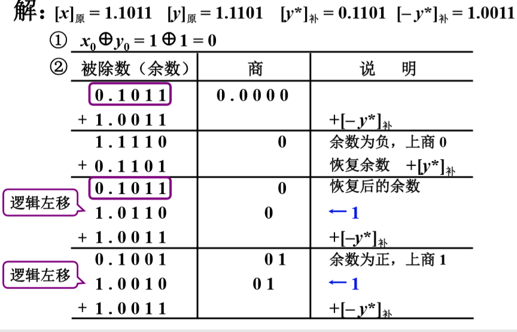
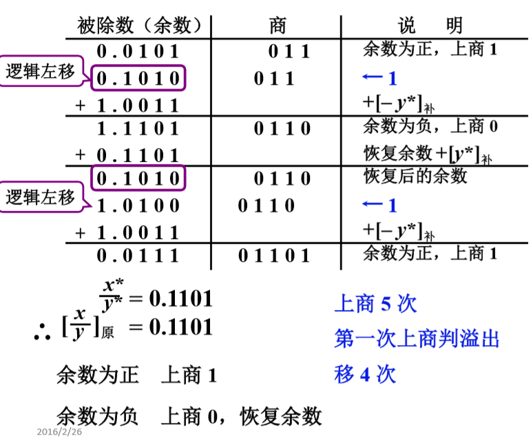
恢复余数法不仅需要求 x 与 y 的原码，还要求 y 的补码与-y 的补码，用于减法运算。
x 是被除数，取其绝对值，加-y 的补码(相当于减去 y)，第一次相加(x 与-y 的补码相加)表示试探，如果商 1，代表溢出，因为在小数定点机中，不能大于 1.如果商 0，代表余数为负，需要恢复余数，则加 y 的补码，得到商 0 前的余数，然后将余数逻辑左移一位，然后再加-y 的补码，得到的余数为正，再商 1，将余数左移一位，加-y 的补码，循环后得到最后的值，0.1101.此过程一共上商 5 次，第一次上商判断溢出，总共移位 4 次。
- 余数为正，上商 1。
- 余数为负，上商 0，恢复余数。
不恢复余数法(加减交替法) 链接到标题
-
恢复余数法运算规则
- 余数 Ri>0，上商”1”，2Ri(余数)-y*
- 余数 Ri<0，上商”0”，Ri+y* (恢复余数)
$2(R_i+y^∗)−y^∗=2R_i+y^∗$(左移一位乘 2，所以是 2Ri，通过这个值判断新的一次操作是上商 0 还是 1)
-
不恢复余数法运算规则(加减交替，恢复余数法的改进)
- 上商”1”，2Ri-y*
- 上商”0”，2Ri+y*
例： x=-0.1011，y=-0.1101，求[x/y]原
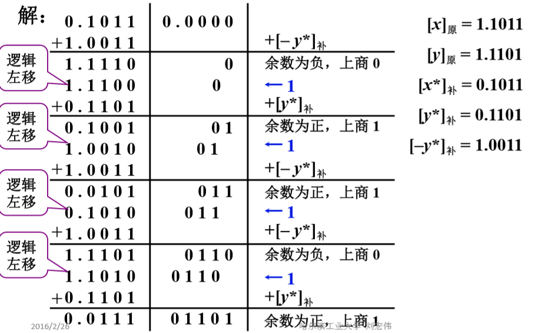
首先还是求 x 与 y 绝对值的补码以及-y 绝对值的补码，首先加-y 绝对值的补码用于实现减 y 操作判断溢出，余数为负数，上商 0，然后执行 2Ri+y 操作，即余数左移一位，加 y 的补码,判断结果余数的正负，余数为正，商 1，执行 2Ri-y 操作，即余数左移一位，减去 y,循环计算得到结果。
结果：$x_0 y_0=1⊕1=0$
x*/y*=0.1101
[x/y]=0.1101
特点 链接到标题
- 上商 n+1 次
- 第一次上商判断溢出
- 移位 n 次，加 n+1 次
- 用移位的次数判断除法是否结束
原码加减交替除法硬件配置 链接到标题
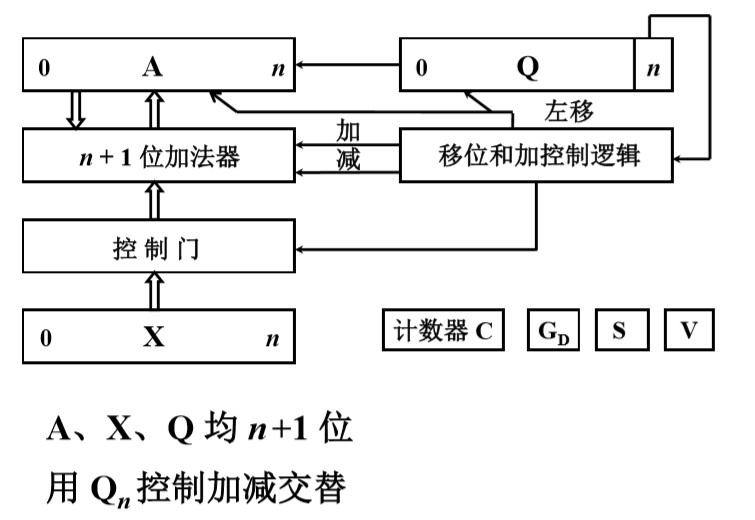
移位和加控制逻辑负责判断加减。